The Concept of Kinetic Monte Carlo¶
Why use Kinetic Monte Carlo?¶
There is a class of systems in nature for which the spatiotemporal evolution can be described using a master type of equation. While chemical reactions at surfaces is one of them, it is not limited to those.
The master equation imposes that given a probability distribution 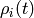 over states, the probability distribution at one infinitesimal time 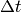 later can be obtained from
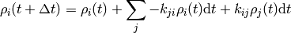
where the important bit is that each 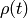
only depends on the state just before the current state.
The matrix 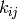 consists of constant real entries,
which describe the rate at which the system can propagate
from state  to state
to state  .
In other words the system is without memory which is
usually known as the Markov approximation.
.
In other words the system is without memory which is
usually known as the Markov approximation.
Kinetic Monte Carlo (kMC) integrates this equation by generating a state-to-state trajectory using a preset catalog of transitions or elementary steps and a rate constant for each elementary step. The reason to generate state-to-state trajectories rather than just propagating the entire probability distribution at once is that the transition matrix easily becomes too large for many systems at hand that even storing it would be too large for any storage device in foreseeable future.
As a quick estimate consider a system with 100 sites and 3 possible states for each site, thus having 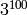 different configurations. The matrix to store all transition elements would have 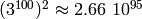 entries, which exceeds the number of atoms on our planet by roughly 45 orders of magnitude. [1] And even though most of these elements would be zero since the number of accessible states is usually a lot smaller, there seems to be no simple way to transform to and solve this irreducible matrix in the general case.
Thus it is a lot more feasible to take one particular configuration and figure out the next process as well as the time it takes to get there and obtain ensemble averages from time averages taken over a sufficiently long trajectory. The basic steps can be described as follows
Basic Kinetic Carlo Algorithm¶
- Fix rate constants
initial state
, and initial time
while 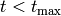 do
- draw random numbers 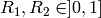
- find
such that 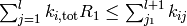
- increment time 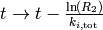
end
Justification of the Algorithm¶
Let’s understand why this simulates a physical process.
The Markov approximation mentioned above implies several things:
not only does it mean one can determine the next process from
the current state. It also implies that all processes happen
independently of one another because any memory of the system
is erased after each step. Another great simplification is
that rate constants simply add to a total rate, which is
sometimes referred to as
Matthiessen’s rule,
viz the rate with which any process occurs is simply
 .
.
First, one can show that the probability that  such processes
occur in a time interval
such processes
occur in a time interval  is given by a Poisson distribution [2]
is given by a Poisson distribution [2]
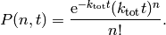
The waiting time or escape time 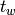 between two such processes is characterized by the probability that zero such processes have occured
(1)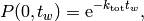
which, as expected, leads to an average waiting time of
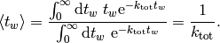
Therefore at every step, we need to advance the time by a random number that is distributed according to (1). One can obtain such a random number from a uniformly distributed random number 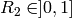 via 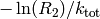. [3]
Second, we need to select the next process. The next process occurs randomly but if we did this a very large number of times for the same initial state the number of times each process is chosen should be proportional to its rate constant. Experimentally one could achieve this by randomly sprinkling sand over an arrangement of buckets, where the size of the bucket is proportional to the rate constant and count each hit by a grain of sand in a bucket as one executed process. Computationally the same is achieved by steps 2 and 3.
| [1] | Wolfram Alpha’s estimate for number of atoms on earth. |
| [2] | C. Gardiner, 2004. Handbook of Stochastic Methods: for Physics, Chemistry, and the Natural Sciences. Springer, 3rd edition, ISBN:3540208828. |
| [3] | P. W. H, T. S. A, V. W. T, and F. B. P, 2007 Numerical Recipes 3rd Edition: The Art of Scientific Computing. Cambridge University Pres, 3rd edition, ISBN:0521768589. * |